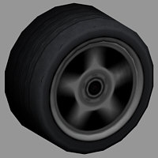
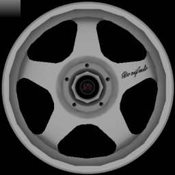

The
model or textures of wheels are not allowed to be stored in the car
folder! They have to be in /editor/ or /textures/ respectively. This
has to be taken care of when designing and publishing custom cars.
The
model or textures of wheels are not allowed to be stored in the car
folder! They have to be in /editor/ or /textures/ respectively. This
has to be taken care of when designing and publishing custom cars.When creating cars for Crashday it is not necessary to provide them with own set of custom default wheels. You are allowed to simply reference to one of the existing wheels in Crashday's wheel folder [crashday]\trkdata\wheels when setting up the car specification file (see Setup of car specification file). However, you still might want to give your vehicle some unique rims or tires. The following paragraph provides you with the knowledge for creating your car's own wheels.
Usually custom wheels are made up of the following files:
|
[wheelName]_def[size].whl |
text file with physical property information. The filename also defines the rim diameter in inch (e.g. apachee_def17.whl for 17” rims). The file has to be located in the car's folder! |
|
[wheelName].p3d |
the 3d model of the complete wheel (normalized extends) |
|
[rim].tga |
texture file for rim mesh |
|
[rim].tex |
shader file for rim texture |
|
[rimAnimated].tga |
motion blured rim texture file for rotating rim mesh |
|
[rimAnimated].tex |
shader file for motion blured rim texture |
The
model or textures of wheels are not allowed to be stored in the car
folder! They have to be in /editor/ or /textures/ respectively. This
has to be taken care of when designing and publishing custom cars.
The .whl file holds the following parameters (example from Apachee default wheels):
|
whl-apa-def.p3d |
link to the 3d model located in [crashday]\editor |
|
0.78 |
rim radius percentage (0-1) of full wheel radius |
|
245 |
wheel width in mm for front wheels |
|
330 |
wheel width in mm for rear wheels |
|
0.06 |
slip ratio traction peak (0.0-1.0) – how much does the tire need to slip to generate 100% of traction |
|
0.7 |
remaining traction at maximum slip (0.0-1.0) – if slipping too much, how much % of traction is left? |
|
9 |
slip angle at lateral force peak (0-90 deg) – at which angle of wheel inclination does the tire generate 100% of the lateral forces |
|
0.95 |
remaining traction at maximum slip angle (90 deg) – if wheel is slipping 90 degrees towards the movement direction, how much sidewards traction is left? |
|
0.86 |
rubber traction constant - general multiplier (multiplied with wheel width) |
|
0.45 |
grass traction multiplicator |
|
1 |
whether or not assign chrome instead of specular in garage/shop |
The wheel 3d model has normalized extends i.e. it is scaled in-game by the .whl file. It should feature the following meshes:
|
main |
rim and tire geometry (polygon count of Crashday default wheels is about 1300) |
|
ainim |
mesh which is displayed at a certain rotation speed |
|
static_bra |
non-rotating brake mesh |
To
achieve optimal performance be sure to also include “level
of detail” sub meshes for the "main" and "anim" mesh. See Level Of Detail implementation for a reference on the “level
of detail” implementation in Crashday.
 
main
and static_bra mesh
anim
mesh
rim
texture (256x256)
animated
rim texture with alpha channel